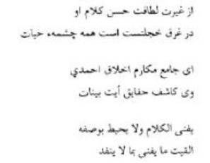

Senelerce Mevlânâ ile beraber yaşamak saadetine eren Sipehsalar’ın şiirleri de vardır. Yazdığı şu üç beyti dikkatle okumak gerek:

“Ya Hazret-i Mevlânâ! Senin sözlerinin güzelliğini ve letafetini kıskandığı için insanlara ölümsüzlük bağışlayan âb-ı hayat çeşmesi, tamamıyla utanç içine gömüldü, kaldı. Artık kimseye gözükmüyor.
Ey mekârim-i ahlâkı tamamlamak için dünyayı şereflendiren Sevgili Peygamber’in bütün güzel huylarını kendinde toplayan Mevlânâ!
Ey Kur’ân-ı Kerîm’in âyetlerini, en güzel, en doğru şekilde açıklayan eşsiz varlık! Ben, senin vasfında ne yazabilirim? Ne söyleyebilirim? Çünkü söz biter, fakat söylenen söz, senin vasfını kavrayamaz. Çünkü vasıfların sonsuzdur. İyi huyların had ve hesaba gelmeyecek kadar çoktur, söylenmekle bitmez.” (Sipehsalar, s. 53)
Kumandan Feridun’un bu övgüleri, gönülden gelen, duyularak söylenen, gerçek duygulardır. Mevlânâ’nın gerek Mesnevî-i Şerif ve gerekse Divan-ı Kebîr’ indeki güzel sözler, tatlı ifâdeler herkesi büyülemektedir. Gerçekten de her velide bulunduğu gibi Hazret-i Mevlânâ’da bulunan müsamaha ve iyi huylar, Hazret-i Muhammed’in (s.a.v.) müsamahası ve onun iyi huylarıdır. Sipehsalar, Hazret-i Mevlânâ’ya “Kur’ân-ı Kerim’ in âyetlerini en güzel, en doğru şekilde açıklayan eşsiz varlık” diyor. Gerçekten de Hazret-i Mevlânâ yeri geldikçe Mesnevî-i Şerif’te bazı âyet-i kerimeleri tefsir ederken zamanına gelinceye kadar yetişen tanınmış müfessirlerin dokunamadıkları hususlara Rabbâni bir ilhamla dokunmuş ve açıklamıştır. Bu sebepledir ki, büyük veli İsmail Bursevî hazretleri Rûhü’l-Beyân tefsirinde, bazı âyetleri Mesnevi’den yararlanarak açıklamıştır. Hazret-i Mevlânâ’yı yakından tanıdığı için ona hayranlığını izhar eden Sipehsalar, yalnız Hazret-i Mevlânâ’yı, yani mensup olduğu veliyi değil, bütün velileri severek o devirde tarikat bölücülüğünden kendini kurtarmış, Hakk’ı ve hakikati sevenlere örnek olmuştur. Sipehsalar, risale’sinin bir yerinde diyor ki: “Mevlânâ’nın hudutsuz olan yüksek vasıflarını -ki bazısını kendi gözlerimle müşâhede etmiş, bazısını da duyarak, hissederek, inanarak vicdanen gönlümde bulmuşumdur. Gerek bu fâni baş gözümle gördüklerimi, gerekse gönül gözü ile idrak ettiklerimi, ucu kesik kalem gibi noksan ve aciz olan dilimle nasıl açıklayabilirim? Çünkü, her bilinen görülmez; her görülen söylenmez ve her söylenen de yazılmaz. Bunun delili şudur ki: Cenâb-ı Hakkın velilerinin her biri, yaptıkları ibâdetler, iyilikler, başlarına gelen belâlara gösterdikleri sabır, çektikleri riyazetler, mücahedeler, gayretler ve kendi gönül aynalarını, Hak’tan başka her şeyden temizledikleri, hasetten, benlikten, hiddetten, şehvetten, tamamıyla kurtuldukları için felaha kavuşmuşlardır. Allah’ın bu has kulları, kendilerinden yok olmuşlar, dost ile bâkîdirler. Şaşılacak şey şudur ki: Şu anda onlar var gibi göründükleri hâlde, yokturlar, mevcut değillerdir. Gerçekten de asıl tevhid eri bunlardır. Arta kalanların hepsi, benlik içinde olup, kendilerine tapıcıdırlar.”
“Hazret-i Mevlânâ’nın, diğer veliler gibi ulaştığı makamları anlatmakta bu fakir Sipehsalar için bir vazife vardır. Gerçekleri söylemek zorundayım. Önce şunu arz etmeliyim ki, Hazret-i Pir Arapçanın künhüne vâkıftı. Arap dilinin bütün inceliklerini ve lügatlerini biliyordu. Fıkıh, tefsir, hadis, aklî ve naklî ilimlerde o çağda, zamanın bütün bilginlerinin başta gelenlerindendi. Bütün fenlerde yüksek icazetler elde etmişti. Gençliğinin ilk çağında Halep şehrinde tahsilini ilerletirken, arkadaşları, kendilerine güç gelen meseleleri Mevlânâ’ya sorarlardı. Mevlânâ kendisine sorulan herhangi bir meselenin tarifi hususunda o kadar yollar gösterirdi ki, bunları duyanlar, o anlaşılmaz gibi görünen konuya akıl erdirenler, anlama ve duyma zevkinden heyecana kapılırlardı. Öyle ki, gösterdiği çözüm şekillerinden hiçbiri bir kitapta bulunmuyordu. Mevlânâ’nın mübarek nazarları en karışık, en zor meseleleri gönül kitabından okuyor, onları cevaplandırıyordu.”